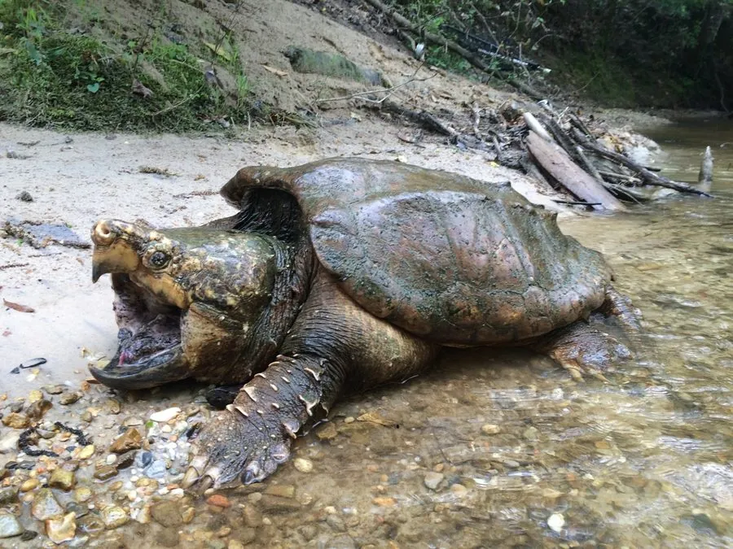

爬行动物 · 动物界
大鳄龟 Macrochelys temminckii

北美大型淡水龟，头部巨大、背甲有三条棱脊，舌上有一个红色诱饵状突起，咬合力很强，需避免徒手接触。
- 分类
- 门脊索动物门纲爬行纲目龟鳖目科鳄龟科属大鳄龟属
- 栖息环境
- 美国东南部的河流、湖泊、沼泽、水库与泥底水域
- 地理分布
- 美国东南部及密西西比河流域
- 保护级别
- IUCN 易危（VU）；非中国原产，在中国无保护级别
物种志
大鳄龟背甲长 40–70 厘米，最大可达 80 厘米，体重 30–80 千克，是北美最大的淡水龟之一。它头部巨大，吻端尖，颈部粗壮并有肉突，背甲呈棕褐或灰褐色，有三条明显的纵棱，后缘呈锯齿状，尾巴长而粗；它的舌上有一个红色蠕虫状的突起，可扭动引诱小鱼靠近。
它分布于美国东南部的河流、湖泊、沼泽和水库，终生水栖，夜间捕食鱼类、蛙类、龟类、鸟类、小型哺乳动物和腐肉，靠强壮的上下颌夹住猎物。每年 4–6 月繁殖，雌龟在沙土中产卵 10–50 枚，孵化期 60–90 天。大鳄龟咬合力很强，被抓住时可能咬人，处理时需格外小心；它因宠物和肉用贸易被引入中国等地，属于外来物种，不可随意放生。
形态与习性
- 食性鱼类、蛙类、龟类、鸟类、小型哺乳动物和腐肉
- 体长背甲长 40–70 cm，最大可达 80 cm
- 体重约 30–80 kg
- 繁殖卵生，10–50 枚，孵化 60–90 天
- 防御咬合力强，被抓住时会咬人，需避免徒手接触
趣味知识
- 大鳄龟舌上有一个红色蠕虫状突起，会扭动吸引小鱼靠近。
- 它背甲有三条明显纵棱，后缘呈锯齿状，外形十分古老。
- 大鳄龟咬合力很强，处理时应使用工具，不要徒手靠近头部。